Опыт и специализация
Регистрационный номер 77/10453 в реестре адвокатов г.Москвы.
Окончил МГЮА (дневной факультет) в 2000 г.
Работал в Прокуратуре г. Москвы (следователь межрайонной прокуратуры, старший следователь прокуратуры округа), затем - начальником юридического отдела в ОАО.
Общий юридический стаж с 2000 г.
Стаж адвокатской деятельности 20 лет.
Специализации:
- Защита обвиняемых на следствии, и в суде; Представление интересов потерпевших в уголовном процессе; Защита по уголовным делам о преступлениях против жизни и здоровья, собственности , экономическим преступлениям, преступлениям в сфере безопасности дорожного движения, преступлениям по наркотикам.
- Жилищные дела: Юридическое сопровождение покупки и продажи жилья; дела по долевому строительству; Раздел жилья; Признание права собственности.Вселение, выселение.
- Наследственные дела: Сопровождение наследственного дела; Восстановление пропущенных сроков; Признание права собственности через суд; Споры наследников.
- Миграционные дела: Снятие запрета на въезд в РФ; Отмена депортации и выдворения.
Квалификация:

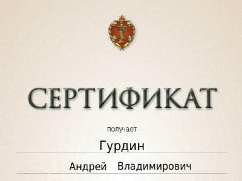

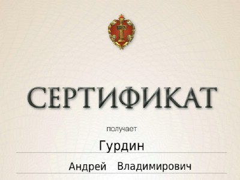

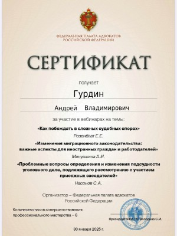
Успешная практика адвоката
Смягчение наказания с 10 лет до 4 с ч. 4 ст. 228.1 на ч. 2 ст. 228.

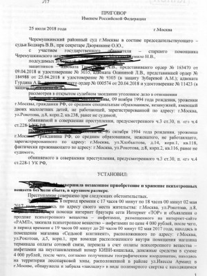

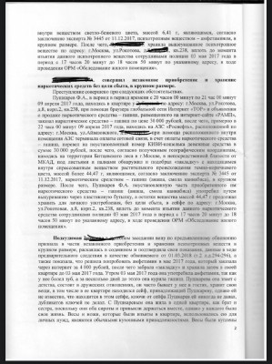

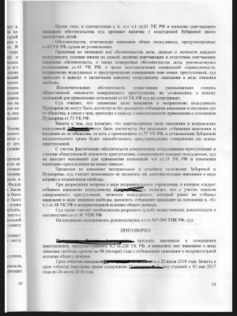

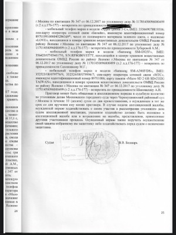
Дело в Арбитражном суде г. Москвы по взысканию крупной задолженности
Доверитель обратился к адвокату с вопросом защиты от претензий контрагента, предъявившего требования о взыскании за поставку товаров
Задача адвоката: Обосновать позицию в Арбитражном суде города Москвы, доказать факт работ поставки и минимизировать риски дополнительных трат и требований.
Адвокатом была проведена сложная работа с доказательствами (товарные накладные с разными подписями, выписки, акты сверки). В суде опровергнуты доводы истца о не проведении работ, наличии брака. Применены нормы ст. 309, 486 ГК РФ, и другие нормы права.
Результат по делу:
В удовлетворении иска отказано в полном объеме. Ответчик избежал финансовых потерь.


Дело по разделу долевой собственности.

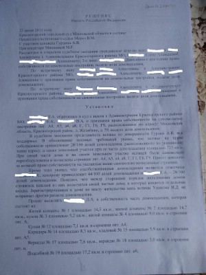

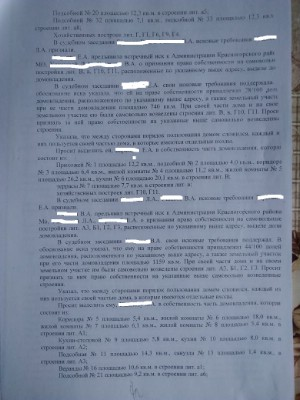

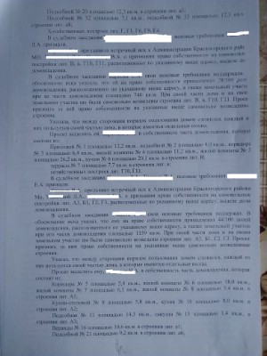

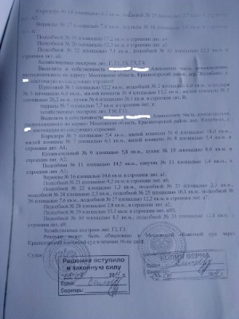

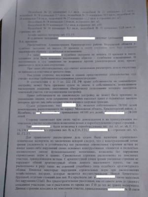

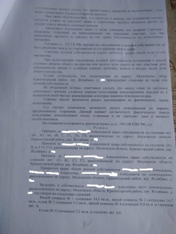
Дело о предоставлении жилого помещения по реновации.
В рамках программы реновации жилищного фонда в Москве возникает немало спорных ситуаций, связанных с признанием права собственности на доли в квартире. Однако отдельного внимания заслуживают случаи, когда между супругами отсутствует спор — оба согласны с размером своих долей и готовы к переселению, но юридически не могут реализовать это право без судебного решения. Такая ситуация складывается, когда жилое помещение находится в общей совместной (а не долевой) собственности супругов, а приватизационные или иные правоустанавливающие документы не позволяют однозначно определить, кому какая доля принадлежит. Департамент городского имущества в таких случаях отказывается предоставлять равнозначное жилье каждому из супругов отдельно до тех пор, пока их доли не будут юридически выделены и подтверждены судебным актом.
Резервирование земель и жилых помещений для государственных нужд Москвы осуществляется в строго определенном порядке, предусмотренном постановлением Правительства Москвы от 23.12.2015 № 941-ПП . При попадании дома в программу реновации собственники получают равнозначное жилье взамен изымаемого. Но если квартира находится в совместной собственности супругов без выделения долей, город предлагает одну квартиру на двоих — опять же в совместную собственность. Для многих семей это неприемлемо: каждый хочет иметь свою долю, чтобы в будущем распоряжаться ею самостоятельно (продать, подарить, завещать). Поскольку спор между супругами отсутствует, адвокат готовит в суд совместное заявление о признании права общей долевой собственности (по ? или в ином согласованном соотношении). Суд в упрощенном порядке удовлетворяет требования, и на основании решения супруги регистрируют доли в Росреестре, после чего вправе требовать от Департамента предоставления двух отдельных равнозначных жилых помещений либо одной квартиры, но уже в долевую собственность с четким определением долей каждого.

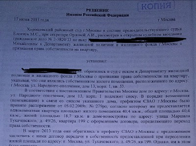

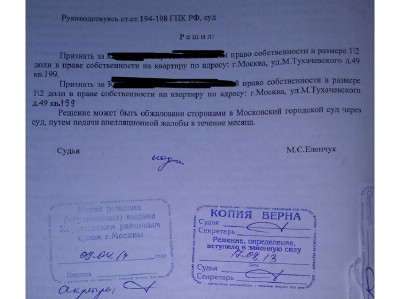
Прекращение уголовного дела в связи с примирением сторон.
В результате квалифицированной работы адвоката на стадии предварительного следствия и в судебном заседании, благодаря грамотно выстроенной позиции защитника, суд вынес решение о прекращении уголовного дела в связи с примирением сторон. Это стало возможным после выполнения всех необходимых юридических процедур и соблюдения условий, предусмотренных ст. 25 УПК РФ и ст. 76 УК.
Дело о прекращении права пользования жилым помещением.
ФИО обратились в суд с иском к ответчику ФИО о признании прекратившим право пользования жилым помещением и снятии с регистрационного учета, ссылаясь на то, что они являются собственниками в равных долях жилого помещения по адресу: <адрес>. С 1 июля 2005 года в квартире зарегистрирован ФИО5., с которым ФИО вступила в брак. Брак между ФИО и ФИО расторгнут на основании решения мирового судьи от 5.10.2011 года. В июле 2011 года ответчик ФИО забрал свои личные вещи и добровольно выехал из квартиры. Препятствий в пользовании жилым помещением ответчику не чинится. Ответчик перестал был членом семьи истцов в связи с чем утратил право пользования квартирой. В связи с чем просят суд признать ФИО прекратившим право пользования жилым помещением, расположенным по адресу: <адрес>, и снять его с регистрационного учета.
Оспаривание отказа администрации в выкупе зем участка
В результате обращения адвоката в суд с иском об оспаривании решения администрации об отказе в выделе земли, было вынесено решение об удовлетворении требований доверителя о предоставлении земельного участка для ведения коммерческой деятельности.
Дело о разделе имущества.
Адвокат сопроводил процедуру раздела имущества после расторжения брака между супругами. В результате судебной процедуры права доверителя были соблюдены, раздел был произведен с учетом интересов доверителя.
Смягчение наказания с 10 лет до 4 с ч. 4 ст. 228.1 на ч. 2 ст. 228.
Мужчину задержали с крупной партией расфасованного вещества. Обвинение сразу предъявило по ч. 4 ст. 228.1 УК РФ (покушение на сбыт). Прокурор требовал 10 лет колонии строгого режима. Проблема: Формально всё выглядело плохо — крупный размер, удобная упаковка.Адвокатом были предприняты следующие действия. 1. Доказал, что у подзащитного диагностирована наркотическая зависимость, подтверждённая экспертизой. 2. Объяснила расфасовку не подготовкой к продаже, а необходимостью дозировать вещество для себя из-за высокой толерантности. 3. Указала на отсутствие любых доказательств сбыта: нет явных переписок, закладок, однозначных показаний покупателей.
Результат: Суд согласился с доводами. Переквалификация на ч. 2 ст. 228 УК РФ (незаконное хранение без цели сбыта). Наказание снижено с требуемых 10 лет до 4 лет лишения свободы.
Почему это работает: В таких делах ключевой вопрос — цель сбыта. Если государство не может её доказать, а зависимость подтверждена, суд обязан переквалифицировать статью. Разница между 228.1 и 228 — это разница между десятилетиями тюрьмы и реальным шансом на смягчение.
Суд согласился с доводами защиты и изменил квалификацию преступления, перешёл на менее строгую статью, менее тяжкую, и назначил минимально возможное наказание. В итоге, осужденный освободился услово-досрочно через два года.